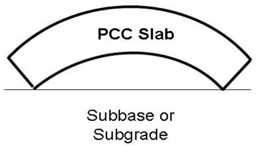
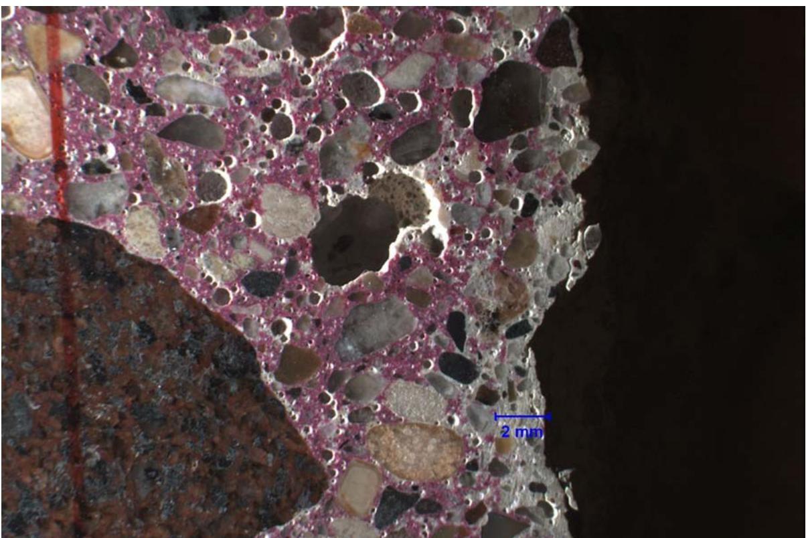
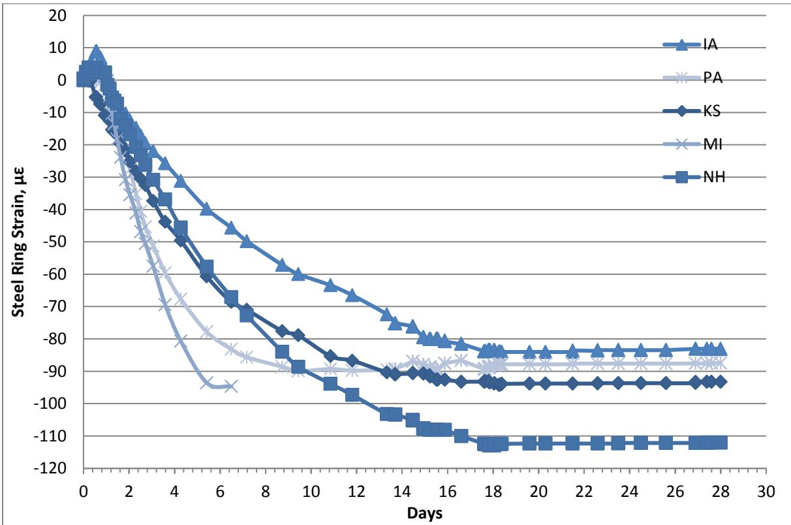
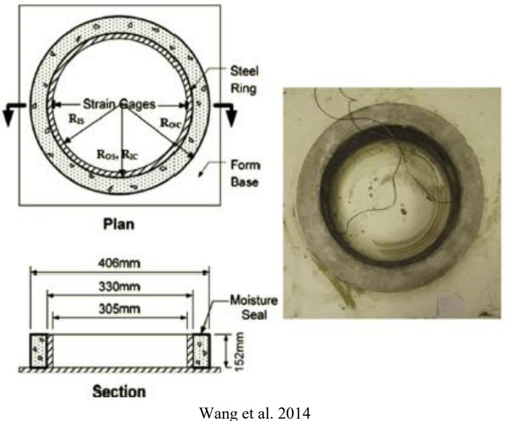
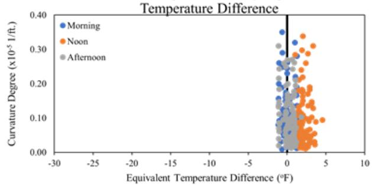
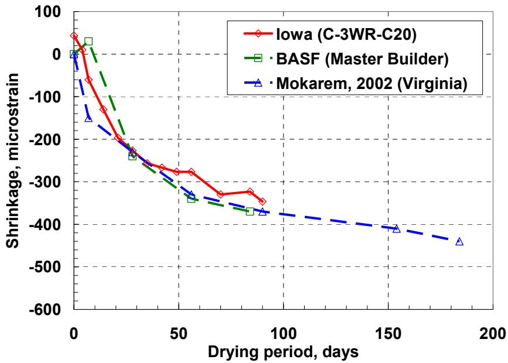
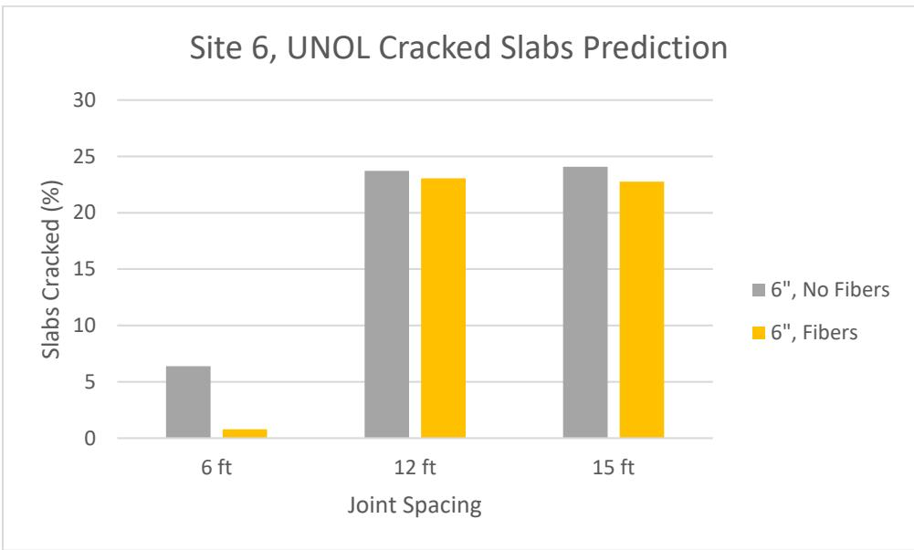
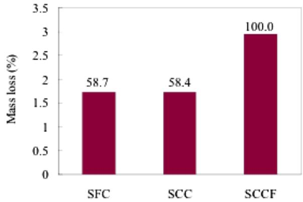
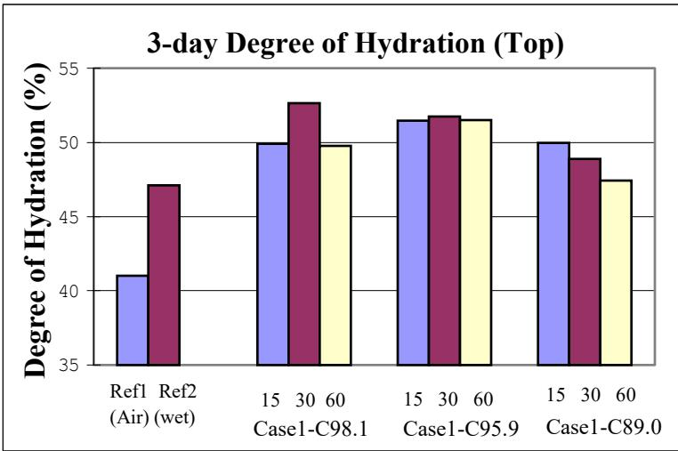
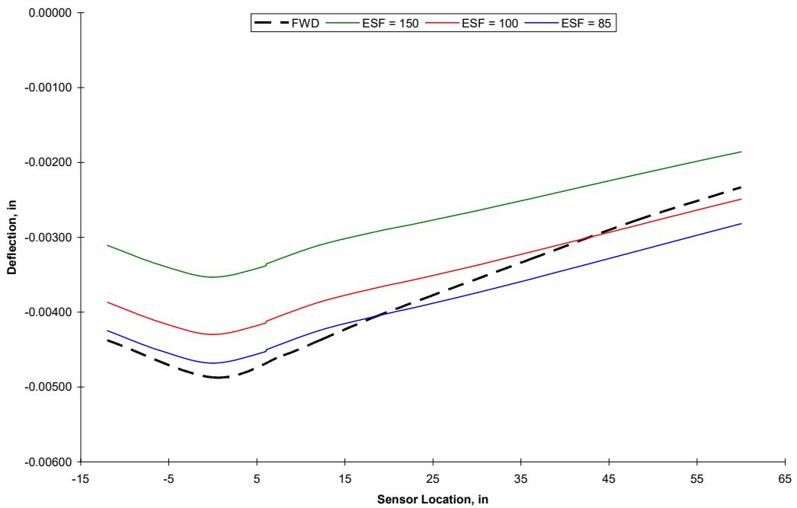

Drying Shrinkage
Drying shrinkage is a primary mechanism within Shrinkage & Early-Age Cracking, defined as the time-dependent contraction of hardened concrete caused by the evaporation of moisture from the cement paste matrix [4]. Unlike plastic shrinkage (which occurs while concrete is still plastic), drying shrinkage develops over weeks to months after initial set due to the loss of capillary water to the environment rather than cement hydration, as the surface is in close proximity to the air [4]. This volume change results from evaporation near the surface and can induce cracking in restrained elements such as bridge decks; the resulting moisture differential leads to significant irreversible deformation that contributes to early-age cracking because the concrete remains a weak solid initially after setting [1].
Sources (32)
Mechanisms of Drying Shrinkage
Drying shrinkage is driven by capillary tension in the pore solution, surface energy changes, and interlayer water loss in calcium silicate hydrate (C-S-H), with its magnitude depending on the water-to-cement ratio, paste volume, ambient humidity, and the degree of restraint provided by reinforcement or adjacent structures. The evaporation of capillary water from between aggregates generates negative pressure that drives concrete contraction, with shrinkage cracks originating specifically from the empty capillaries left after water extraction [1]. Additionally, hydration reactions consume water to form the cement matrix, and because various hydration products occupy less space than the original water volume, this chemical consumption directly contributes to specimen contraction [1]. When the relative humidity within concrete drops below 80%, cement hydration may cease, which directly impacts the long-term moisture availability for continued shrinkage development [2]. The irreversibility of drying shrinkage deformation after rewetting is attributed to the unstable amorphous nature of calcium silicate hydrate, which causes bond structure rearrangement due to moisture loss [3]. Consequently, drying shrinkage-induced volume changes manifest as significant irreversible deformation known as permanent warping after rewetting [4].
 Recreated from Cement Concrete & Aggregates Australia 2002 Figure 4. Typical volume behavior of concrete drying and wetting [4]
Recreated from Cement Concrete & Aggregates Australia 2002 Figure 4. Typical volume behavior of concrete drying and wetting [4]
Drying shrinkage is generally limited to the top two inches of the PCC slab [4]. This process contributes to axial contraction in concrete slabs, which can induce tensile stresses that lead to cracking when restrained by subgrade friction or adjacent structural elements [5]. Furthermore, drying shrinkage contributes to permanent curling and warping in concrete pavements, which occurs because unrecoverable shrinkage combines with slab curvature at zero temperature gradient after the initial setting period [3]. Moisture gradients significantly influence this behavior; a positive moisture gradient, where the slab surface is wetter than the bottom, induces downward warping of slab corners, whereas a negative moisture gradient (bottom wetter than top) causes upward warping [4]. Similarly, when the moisture content at the top of a slab is higher than at the bottom, a positive moisture gradient occurs, leading to downward curvature, whereas a negative gradient causes upward slab curvature [6]. Joint activation rates in concrete overlays increase steadily over time and are fundamentally driven by shrinkage-related stresses that scale with joint spacing, as longer sections accumulate greater restrained strain before cracking [7]. Finally, secondary ettringite formation can infill fine air void spaces adjacent to joints, reducing entrained air content and pushing spacing factors out of acceptable limits for freeze-thaw resistance [8].

Moisture at top > moisture at bottom [3]Microcracking and Carbonation Effects
Drying shrinkage microcracks in concrete pavements can extend from the top surface to depths ranging from less than 4 mm up to 17 mm [9], and in some concrete cores, these cracks have been observed to reach depths of up to 47 mm (1-7/8 inches) from the surface [9]. These microcracks often appear as fine subvertical cracks that may facilitate secondary deterioration processes [9]; specifically, very fine subvertical drying shrinkage microcracks can proceed to 2 mm depth from the top surface of concrete cores [8], while other fine, subvertical cracks can proceed up to a maximum depth of 12 mm from the top surface of concrete cores [8]. Subhorizontal drying shrinkage microcracks have also been documented concentrated within the top 24 mm (15/16 inches) of concrete samples, often proceeding through numerous chert fine aggregate particles [9]. Furthermore, drying shrinkage microcracking can occur internally within reactive chert and shale fine aggregate particles in addition to proceeding through the surrounding cement paste matrix [9]. Microcracking associated with drying shrinkage can occur within alkali-silica reactive shale fine aggregate particles, often radiating from these reactive sources [8], and microcracks can occur within, surrounding, and shallowly radiating from numerous alkali-silica reactive shale fine aggregate particles [8]. Additionally, concentrated subvertical microcracking can occur within limestone coarse aggregate bisected by a joint crack between specific depths [8], and a single, fine microcrack can be observed at a low angle oriented sub-parallel to the joint crack at the base of a sawcut [8].
 P1 DESCRIPTION: Concentrated microcracking within a coarse aggregate particle bisected by the joint crack and located at below 95mm depth in the core. 5x [8]
P1 DESCRIPTION: Concentrated microcracking within a coarse aggregate particle bisected by the joint crack and located at below 95mm depth in the core. 5x [8]
These cracks can facilitate deep carbonation, with carbonation depths ranging from negligible up to 16 mm along these sub-vertical cracks in concrete cores [8]. Along fine sub-vertical drying shrinkage microcracking, carbonation can range from negligible up to 3 mm depth from the top surface of concrete cores [8], from negligible up to 6 mm depth from the top surfaces of concrete cores [8], or from negligible up to 6 mm depth from the top surfaces of concrete cores along fine sub-vertical drying shrinkage microcracking [8]. Other observed carbonation depths along fine drying shrinkage microcracking in concrete cores include ranges from negligible up to 7.5 mm depth [8], from less than 1 mm to 7 mm depth [8], and up to 8 mm depth from the top surface of concrete cores [8]. Carbonation can also extend up to 15 mm depth intermittently from the top surface of concrete cores along sub-vertical drying shrinkage microcracks [8]. Regarding joint planes, carbonation can range from negligible up to 4 mm depth from a joint crack plane in concrete cores [8], from negligible up to 12 mm depth from a joint crack plane in concrete cores [8], and can proceed continuously from distressed joint planes into the concrete core, extending up to 14 mm from the joint plane at shallow depths [8]. Carbonation can also range from negligible up to 5 mm depth from a sawcut joint surface in concrete cores [8]. Finally, early entry sawing joints in pavements constructed with low-shrinkage ternary mixes containing slag and fly ash may experience delayed cracking that extends beyond one month after construction, sometimes requiring contractors to perform secondary sawing operations weeks later [10].

4, 4705-30 DESCRIPTION: Carbonation (unstained paste) proceeds up to 2mm depth from the distressed joint plane at 100mm depth in the core. [8]Factors Influencing Shrinkage: Mix Design and Materials
Moisture loss in specimens varies with cement type, water content, placement temperature, and curing materials, typically resulting in the highest moisture content in the middle depth and the lowest at the surface [2]. The inclusion of supplementary cementitious materials (SCMs) such as fly ash, ground granulated blast-furnace slag, and silica fume can alter the shrinkage characteristics of concrete compared to pure portland cement mixtures; these materials are often blended with portland cement or added during mixing to optimize durability and strength, though their variable chemical properties require careful selection to ensure positive impacts on overall performance [11]. For instance, fly ash consistently reduces drying shrinkage, whereas slag tends to increase it by behaving similarly to cement and expanding the volume of cementitious material, though ternary mixtures can be formulated to entirely compensate for these opposing effects [12]. Metakaolin is beneficial in reducing drying shrinkage when compared to silica fume concrete, although its incorporation generally increases water demand and requires larger dosages of water-reducing admixture, with optimum replacement ranges typically falling between 15% and 25% by weight depending on the desired balance of properties [13]. Using mortar mixtures to identify optimum dosages of SCMs is a reasonably successful strategy, as drying shrinkage in these specimens strongly correlates with the specific cementitious components used [12]. Control mixtures containing 100% portland or blended cement exhibited 28-day shrinkage values ranging from -0.0667% to -0.1178%, with Type I/II cement showing the lowest shrinkage and Type I PC showing the highest among controls [13]. Binary mixtures incorporating specific SCMs, such as 20% Class C fly ash or 35% Grade 100 GGBFS, demonstrated mean shrinkage values of -0.0810% and -0.0889%, respectively [13]. Ternary mixtures utilizing Type I cement with Class C fly ash and another cementitious material achieved shrinkage reductions of 17% to 40% compared to plain cement controls, averaging a 20% reduction, while ternary combinations involving Type I cement, silica fume, and additional SCMs reduced shrinkage by 14.7% to 32.3% relative to the control mixture [13]. Furthermore, a ternary mixture containing 68% Type I-II cement, 17% Grade 120 GGBFS, and 15% Class F fly ash exhibited a net reduction in length due to shrinkage that was not overcome by sulfate expansion over an extended period [14], whereas a specific ternary combination of 20% Class F2 fly ash and 5% metakaolin resulted in the highest recorded 365-day strain at 637 microstrain, exceeding the performance of other tested mixtures [14]. Additionally, enhanced microstructural cement (EMC) technology, involving intensive grinding and activation without additives, allows for a 10 percent reduction in the water-cement ratio while maintaining workability, thereby improving long-term strength and reducing shrinkage potential compared to conventional portland pozzolan-blended cements [15].
 Illustration of how ternary mixtures impact the shrinkage of mortar bars [12]
Illustration of how ternary mixtures impact the shrinkage of mortar bars [12]
Aggregate selection and cement content significantly influence cracking and durability. Increasing coarse aggregate content reduces drying shrinkage and warping potential, thereby decreasing the likelihood of longitudinal cracking in concrete pavements [16], and crushed limestone aggregates exhibit a lower propensity for crack initiation from concrete sawing compared to other aggregate types [16]. Conversely, the use of recycled concrete aggregate (RCA) or slag in concrete mixtures can lead to unusually rapid deterioration of transverse cracks due to excessive plastic and drying shrinkage, particularly when combined with highly absorptive blast furnace slag aggregates [17]. Concrete containing RCA generally experiences higher drying shrinkage compared to mixtures using virgin aggregates, a property influenced by the amount of old mortar adhering to the recycled particles [18]; specifically, the mortar content within recycled aggregates directly impacts the drying and shrinkage characteristics of new concrete mixtures, with higher mortar fractions leading to increased shrinkage potential [18]. Furthermore, the use of recycled concrete aggregate fines can lead to increased drying shrinkage in new concrete mixtures, often resulting in reduced workability and strength [18]. Regarding cementitious content, ACI Committee 302 (1996) establishes minimum cementitious material contents for flatwork to ensure adequate workability, finishability, abrasion resistance, and durability [19]. However, increasing the cement content in recycled aggregate concrete mixtures can contribute to higher ultimate shrinkage values compared to conventional mixes [18], and for a given water-to-cement ratio, increasing cement content can decrease overall durability by simultaneously increasing chloride penetration and shrinkage potential [19]. Excessive cement content increases the risk of shrinkage and cracking by raising internal temperatures during finishing and curing, while also potentially reducing durability through increased chloride penetration; thus, balancing cement volume is critical to avoid these performance issues rather than assuming higher cement yields better results [19]. A moderate water-to-cement ratio is optimal because high ratios increase drying shrinkage while low ratios increase autogenous shrinkage, both elevating cracking risks [16]. Chemical admixtures also play a role; exceeding the recommended dosage of Type A water reducers significantly decreases early-age compressive strength due to retardation, although 28-day strengths recover to levels comparable to properly dosed mixtures [20], and excessive use of superplasticizers may increase total shrinkage due to lower water-to-cement ratios aggravating autogenous shrinkage [4]. Finally, AASHTO R 101-22 recommends limiting paste volume to no more than 25% of the total concrete volume as a prescriptive measure to minimize shrinkage potential [21].
Mitigation Strategies: Admixtures and Internal Curing
The management of drying shrinkage involves various chemical and physical mitigation techniques, though some methods present trade-offs. The use of water-reducing admixtures can increase drying shrinkage by lowering the water-cement ratio, which essentially increases strength but also enhances shrinkage potential; this effect is observed across low-range, mid-range, and high-range classifications of these chemical admixtures [13]. Shrinkage-reducing admixtures mitigate cracking by lowering the surface tension at capillaries, which reduces shrinkage forces, though they may simultaneously affect the concrete’s strength and modulus of elasticity [1]. These admixtures can reduce early-age shrinkage by approximately 30% to 40% [4] and are effective at mitigating drying shrinkage in self-flowing slip-form concrete mixtures [22]. Additionally, poly(alpha-methylstyrene) curing compounds reduce shrinkage more effectively than conventional wax- or resin-based curing compounds [4].
Internal curing serves as a primary mechanism for improving durability and reducing dimensional changes. The use of lightweight fine aggregate (LWFA) in concrete mixtures facilitates internal curing by acting as water reservoirs that replenish moisture depleted during cement hydration, thereby reducing dimensional change due to shrinkage [23]. This mechanism is particularly effective in low water-to-cement ratio mixtures where batch water is typically insufficient for complete hydration [23]. Internal curing using prewetted lightweight fine aggregate (LWFA) can reduce the rate of drying shrinkage and mitigate early-age cracking caused by restrained shrinkage, while also increasing the degree of hydration for supplementary cementitious materials [24]. This method is generally preferred over coarse LWA because it provides improved particle spacing at lower aggregate substitutions, allowing curing water to be drawn more rapidly and uniformly throughout the paste matrix [24]. The goal of internal curing is to maintain early-age internal moisture above 90% by replacing approximately 20% to 25% of the fine aggregate with saturated lightweight fine aggregate [25].
 Conceptual illustration of volumetric components in a plain and internally cured mixture [24]
Conceptual illustration of volumetric components in a plain and internally cured mixture [24]
The benefits of internal curing extend to various structural and chemical properties. Internal curing using saturated lightweight fine aggregate can substantially reduce transport properties such as diffusion and sorptivity, which increases the service life of concrete structures while simultaneously lowering permeability [23]. This process enhances the hydration efficiency of supplementary cementitious materials like fly ash and slag cement [23], and can increase calcium silicate hydrate (C-S-H) content by approximately 20% at 28 days compared to conventional mixtures [25]. Furthermore, internal curing can reduce damage associated with alkali-silica reaction (ASR) through dilution, providing space to accommodate ASR gel and altering pore solution composition; this mechanism complements the reduction in drying shrinkage by improving overall durability without compromising strength or freeze-thaw performance [24]. Internally cured concrete typically exhibits a lower coefficient of thermal expansion (CTE), higher compressive strength, and lower unit weight compared to conventionally cured mixtures [25], and the use of saturated lightweight fine aggregate can decrease the modulus of elasticity (MoE) of concrete, which reduces stresses generated under shrinkage strains [25].
In practical applications, internal curing provides significant advantages for pavements and bridge decks. Internal curing reduces curling, stress development, and overall cracking potential in concrete pavements subjected to drying shrinkage [16]. In continuously reinforced concrete pavements (CRCP), internal curing can lead to tighter crack openings and reduced punch-out failures, while also decreasing upward slab curling associated with long-term drying shrinkage [24]. This approach may enable thinner pavement sections by reducing the built-in stress caused by moisture gradients, such as an 1-inch reduction in slab depth while maintaining performance standards [25]. The use of internally cured concrete in bridge decks has been documented to reduce early-age autogenous shrinkage by more than 80% compared to noninternally cured concretes, a reduction that contributes to an estimated tripling of the typical service life for these structures [24]. Internally cured concrete mixtures have also been shown to be less likely to crack due to plastic, autogenous, and drying effects compared to conventional mixes, allowing for a greater temperature swing in the concrete before cracking occurs [24].
 Example of internally cured concrete being used for concrete pavement patching [24]
Example of internally cured concrete being used for concrete pavement patching [24]
Superabsorbent polymers (SAP) offer an additional method of mitigation. SAP mitigate drying shrinkage by absorbing mixing water and releasing it internally as the concrete matrix dries, with efficiency dependent on the SAP’s dosage, type, and the external environmental conditions [26]. The incorporation of SAP can reduce plastic shrinkage cracks by replacing surface-evaporated water, though its impact on long-term drying shrinkage is governed by the water-to-binder ratio and specimen size [26]. SAP dosage is typically prescribed as 0.3% to 0.6% of the binder mass according to EN 206 standards, with dosing determined by the product’s free swell capacity measured via methods like the tea bag test in saline or aqueous solutions [26]. This internal curing mechanism compensates for water consumption and reduces adverse effects on mechanical performance compared to traditional air-entraining agents [26]. In restrained ring shrinkage testing over 33 days, concrete mixtures containing SAP demonstrated significantly lower strain levels than control specimens; specific commercial products like Hydromax showed the most substantial reduction in shrinkage compared to other SAP types such as PX-1A-TA and BASF [26]. These polymer-modified concretes maintained structural integrity without cracking despite common failure modes observed in standard ASTM testing methods [26]. Furthermore, SAP can swell to fill cracks up to 100 μm wide when water penetrates the system, effectively reducing permeability in healed crack zones as observed through neutron radiography, a self-healing capability that complements shrinkage mitigation by modifying pore structure and limiting ingress pathways for harmful substances like chlorides [26].
Finally, specific management techniques are required for specialized mixtures. In LMC-VE applications, extending curing duration and carefully managing burlap removal helps mitigate sudden moisture changes that exacerbate high early-age shrinkage cracking [27]. Shrinkage-reducing agents and lightweight fine aggregates used as internal curing agents are recommended mitigation techniques for managing drying shrinkage in LMC-VE mixtures [27].
Environmental and Construction Factors
To reliably predict pavement performance, differential slab shrinkage must be accounted for alongside slab curing and zero-stress temperature as a critical construction factor [15]. Differential drying shrinkage through slab depth occurs when the top surface dries faster than the bottom, creating non-uniform volume changes that drive upward warping of slab corners during early pavement life [3]. This is often driven by a persistent negative moisture gradient during hardening, as the pavement bottom typically remains near saturation due to groundwater evaporation [4]. Furthermore, inadequate curing and protection against evaporation can lead to excessive early-age drying, resulting in significant craze cracking that reflects into sub-vertical drying shrinkage microcracks up to 51 mm (2 inches) deep [8]. In arid climates, adopting a thicker slab and/or shorter joint spacing is recommended to minimize drying shrinkage [4]. Additionally, the theoretical free expansion of a 20-foot concrete slab due to daily temperature differences can range between 0.011 and 0.033 inches, which corresponds with measured thermal deformation cycles following joint cracking [10].
Environmental and design factors also significantly influence crack potential; for instance, wind direction affects drying shrinkage stress distribution along slab edges because wind acceleration can induce pop-up cracks near the free edge of concrete slabs [16], with longitudinal cracks in widened concrete pavements typically initiating within approximately 3 feet of the free edge due to these wind-accelerated shrinkage stresses [16]. While stabilized subbases generate higher friction and bond restraints compared to granular bases, thereby increasing tensile stress potential during drying shrinkage [16], widened slabs with asphalt shoulders demonstrate significantly lower susceptibility to longitudinal cracking compared to those with tied Portland cement concrete shoulders [16]. Paving conditions also play a role, as paving during cloudy weather reduces solar radiation and built-in curling effects associated with drying shrinkage compared to sunny conditions [16]. High ambient temperatures during paving increase the degree of built-in curling and warping, whereas night or late fall paving reduces longitudinal cracking potential [16], and morning paving schedules are associated with smoother jointed plain concrete pavement surfaces compared to afternoon placement because they help minimize early-age curling and warping effects [3].
Measurement and Testing Methods
Laboratory evaluation of concrete containing supplementary cementitious materials typically includes testing for both plastic and drying shrinkage alongside other hardened properties like compressive strength and durability [11]. Binary mixtures with slag or fly ash can be evaluated at replacement levels ranging from 0 to 75%, while silica fume dosages are generally limited to approximately 15% [11]. Drying shrinkage is an optional test parameter in concrete mix design evaluations, typically measured periodically over a 56-day period to assess long-term dimensional stability [28], and its measurement is often conducted alongside other mechanical properties such as indirect tensile strength and modulus of elasticity to provide a comprehensive assessment of concrete performance [28]. Unrestrained drying shrinkage can be measured using prismatic bar specimens with nominal dimensions of 25 by 25 by 300 mm and an effective gage length of 250 mm, typically following ASTM C 157 guidelines [12]. While unrestrained drying shrinkage can be limited to less than 420 microstrain at 28 days using AASHTO T 160, this test does not assess early-age chemical or autogenous shrinkage occurring within the first 24 hours [21]. Specifically, drying shrinkage testing for LMC-VE specimens is typically initiated after demolding at one day post-casting, whereas autogenous shrinkage measurements begin immediately upon the occurrence of initial set [27]. The average strain rate factor derived from unrestrained prisms correlates well with restrained ring test results, allowing for a relative ranking of drying shrinkage potential across different field mixtures [20].

Strains of stell rings resulting from concrete shrinkage [20]Cracking tendency due to drying shrinkage can be assessed using ring testing methods such as AASHTO T 334 or T 363, which account for the effects of restraint on stress development [21]. In restrained shrinkage testing per ASTM C1581, the shrinkage strain rate factor is determined by calculating the slope of the regression line between shrinkage strain and the square root of elapsed time; this factor allows for the calculation of average stress rates to compare cracking potential across different concrete mixtures [23]. In the Shafei 2021 study, drying shrinkage was evaluated using restrained ring tests on concrete specimens with various PP microfiber dosages (0.25%, 0.50%, 1.0% by volume) and Class F fly ash binder, finding that PP microfiber percentage from 0.25% to 1.0% did not significantly affect the drying-induced strain rate or final magnitude in the concrete ring, though fibers did reduce cracking potential by increasing tensile strength . Regarding limits, the acceptable limit for drying shrinkage in hardened hydraulic-cement mortar is defined as a maximum length change of 500 microstrain (με) at 28 days, with values exceeding this threshold indicating excessive potential for cracking [14]. To ensure accuracy, drying shrinkage testing specimens must be stored in constant temperature and relative humidity conditions, necessitating specialized storage devices such as curing chambers or length comparators with environmental control [29]. Commercial equipment for concrete shrinkage tests includes various length comparators from manufacturers such as Gilson, Humboldt, ILE, ELE, and Intec, as well as retractometers and plastic shrinkage testers [29].

Configuration of restrained concrete ring samples [23]Modeling, Prediction, and Design Parameters
Drying shrinkage is a critical input parameter for predicting early-age cracking when moisture loss results in large temperature differentials under adverse environmental conditions [30]. As concrete matures, the irreversible drying shrinkage fraction gradually increases and eventually reaches a plateau, contributing to permanent warping commonly referred to as upward built-in curling [6]. A negative equivalent temperature difference indicates that drying shrinkage occurs mainly near the top of the slab, resulting in upward curling [6]. To quantify this curling, the Second-Generation Curvature Index (2GCI) utilizes pseudo strain gradient to fit measured slab profiles to expected curled forms using Westergaard equations [6]. Furthermore, the HIPERPAV software model directly incorporates drying shrinkage alongside autogenous shrinkage, thermal effects, and creep to predict stress development within the first 72 hours of a concrete pavement’s life [30].

Diurnal hourly equivalent temperature difference versus (a) curvature IRI, (b) deflection, (c) deflection ratio, (d) degree of curvature [6]The time required to reach half of the ultimate drying shrinkage strain is influenced by the physical dimensions and geometry of the concrete element, with specific relationships established between specimen size and shape and this development period [29]. Consequently, ultimate drying shrinkage can be estimated from short-term measurements by relating shrinkage values at different ages, utilizing parameters such as the time required to reach half of the ultimate strain in predictive equations [29]. For example, a specific Iowa PCC mix (C-3WR-C20) demonstrated an estimated ultimate shrinkage of 454 microstrain with a time to reach 50% shrinkage at approximately 32 days, derived from fitting short-term test data [29]. In MEPDG modeling, drying shrinkage inputs include the ultimate shrinkage strain, the time required to develop 50% of that strain, the anticipated amount of reversible shrinkage, and the mean monthly ambient relative humidity at the project site [29].

Drying shrinkage of Iowa C-3WR-C20 mix and its comparison with others [29]Regarding structural design and crack management, pavements constructed with recycled concrete aggregate or slag should feature structural designs that minimize reliance on aggregate interlock load transfer capacity at joints or cracks, as these materials are prone to rapid crack deterioration [17]. In fiber-reinforced applications, the residual flexural strength provided by synthetic macrofibers is incorporated into design equations to predict crack opening, where the ratio of residual strength to design flexural strength directly influences the calculated width of shrinkage-induced cracks [31]. However, in joint-free fiber-reinforced concrete overlays, actual field-measured crack openings often exceed predictions based solely on drying shrinkage and temperature changes, suggesting that factors like traffic impacts or incompressible material intrusion contribute significantly to long-term crack width [31].

UNOL predicted cracking at Site 6 [31]Applications in Specialized Concrete Types
The incorporation of ground granulated blast furnace slag (GGBFS) in the concrete mix significantly improved the resistance to chloride ion penetration [17], and replacement rates up to 55% can improve chloride ion penetration resistance while maintaining strength levels comparable to baseline concrete after 14 days [17]. In latex-modified concrete (LMC-VE), the latex dosage directly influences the extent of shrinkage, with higher latex content correlating to increased autogenous and drying shrinkage magnitudes [27]; specifically, drying shrinkage reaches approximately 440 microstrain at 440 days, while autogenous shrinkage stabilizes around 115 microstrain after the same period [27]. Pervious concrete exhibits lower drying shrinkage than standard concrete, allowing for joint spacings significantly larger than the typical 12 feet; while industry recommendations suggest slab lengths not exceeding 20 feet, field applications have successfully utilized spacing up to 45 feet to prevent shrinkage cracking [32]. Due to its high surface area-to-volume ratio and rapid moisture loss potential, fresh pervious concrete requires immediate application of curing compounds and coverage with clear plastic sheeting after placement, with covered curing maintained for a minimum of seven days until the pavement is opened for operation [32].
 Shrinkage test results of LMC-VE specimens [27]
Shrinkage test results of LMC-VE specimens [27]
Self-flowing slip-form concrete (SFSCC) exhibits noticeably higher drying shrinkage than conventional concrete under identical laboratory conditions, primarily due to its lower coarse aggregate content and reduced cement volume [22]. The addition of 2% nano-clay Actigel increases the drying shrinkage of self-flowing slip-form concrete, whereas an equivalent dosage of Metamax reduces it [22]; consequently, drying shrinkage in self-flowing slip-form concrete increases proportionally with higher dosages of Actigel nano-clay, but decreases as the amount of Metamax is increased [22]. Despite exhibiting high drying shrinkage, properly proportioned and constructed self-flowing slip-form concrete pavements can remain crack-free for extended periods under field service conditions [22].

Drying shrinkage and mass loss of mixes without nano-clay [22]Connections
- Plastic Shrinkage Cracking — Drying shrinkage is the longer-term complement to early-age plastic shrinkage
- Capillary Pressure in Concrete — Capillary pressure drives moisture loss underlying drying shrinkage
- Fiber-Reinforced Concrete — Fibers mitigate cracking from drying shrinkage by increasing tensile capacity
- Restrained Shrinkage Ring Test — Standard test method for evaluating drying shrinkage cracking potential
- Concrete Curing — Proper curing delays onset of drying shrinkage
- Shrinkage & Early-Age Cracking
Type 2 liquid membrane-forming curing compounds contain white pigment to reflect radiant heat, reducing temperature increases during curing and lowering early-age stresses caused by differential shrinkage. [2]

Effect of Curing Compound on Degree of Hydration—Air Curing [2]In ultra-thin whitetopping applications, synthetic fiber reinforcement is utilized alongside joint spacing and sealing strategies to mitigate cracking potential associated with moisture loss in thin concrete overlays. [5]

Deflection comparison for pavement with 4.5″ whitetopping and 6 ft joint spacing [5]Fiber reinforcement can prevent cracking in restrained shrinkage tests even when the mixture exhibits a high cracking potential value comparable to non-fibrous mixtures that do crack. [20]
 Shrinkage stress-to-tensile strength ratio (cracking potential_C R ) of restrained concrete rings with time [20]
Shrinkage stress-to-tensile strength ratio (cracking potential_C R ) of restrained concrete rings with time [20]
Carbon microfibers efficiently control crack opening potential in restrained drying shrinkage tests despite showing negligible effects on the rate and magnitude of stress caused by the shrinkage. [1]
 Cracking potential over time for all FRC mixes [1]
Cracking potential over time for all FRC mixes [1]
Shrinkage-reducing admixtures have demonstrated significant potential for controlling drying shrinkage-induced strains in concrete containing carbon fibers. [1]
Macrofibers, typically 1 to 2 inches in length and dosed at rates between 0.2% and 1.0% by volume, bridge developing cracks to carry tensile stresses and absorb energy, thereby reducing the widths of early-age shrinkage cracks. [31]
References
- B. Shafei, P. Taylor, B. Phares, and M. Kazemian, "Fiber-Reinforced Concrete for Bridge Decks," Bridge Engineering Center, Iowa State University, Ames, IA, Rep. TR-767, 2021. [Online]. Available: https://www.intrans.iastate.edu/wp-content/uploads/2021/12/fiber-reinforced_concrete_in_bridge_decks_w_cvr.pdf
- K. Wang, J. K. Cable, and G. Zhi, "Improved Pavement Curing Materials and Techniques: Part 1 (Phases I and II)," Center for Transportation Research and Education (CTRE), Iowa State University, Ames, IA, Rep. TR-451, 2002. [Online]. Available: https://www.cptechcenter.org/wp-content/uploads/2018/03/curing.pdf
- H. Ceylan, S. Kim, D. J. Turner, R. O. Rasmussen, G. K. Chang, J. Grove, and K. Gopalakrishnan, "Impact of Curling, Warping, and Other Early-Age Behavior on Concrete Pavement Smoothness: EFD Study (Phase II)," Center for Transportation Research and Education, Ames, IA, 2007. [Online]. Available: https://www.intrans.iastate.edu/wp-content/uploads/2018/03/curling_warping-2.pdf
- H. Ceylan, S. Yang, K. Gopalakrishnan, S. Kim, P. Taylor, and A. Alhasan, "Impact of Curling and Warping on Concrete Pavement," Institute for Transportation, Ames, IA, Rep. TR-668, 2016. [Online]. Available: https://www.intrans.iastate.edu/wp-content/uploads/2018/03/curling_and_warping_impact_on_concrete_pvmt_w_cvr.pdf
- J. K. Cable, F. S. Fanous, H. Ceylan, D. Wood, D. Frentress, T. Tabbert, S. Y. Oh, and K. Gopalakrishnan, "Design and Construction Procedures for Concrete Overlay and Widening of Existing Pavements," Center for Portland Cement Concrete Pavement Technology, Iowa State University, Ames, IA, Rep. TR-511, 2005. [Online]. Available: https://www.intrans.iastate.edu/wp-content/uploads/2018/03/oreo_design.pdf
- K. Tian, D. King, B. Yang, S. Kim, A. Alhasan, and H. Ceylan, "Impact of Curling and Warping on Concrete Pavement: Phase II," Program for Sustainable Pavement Engineering and Research (PROSPER), Iowa State University, Ames, IA, Rep. TR-749, 2023. [Online]. Available: https://intrans.iastate.edu/app/uploads/2023/06/Impact_of_Curling_and_Warping_Phase_II_w_cvr.pdf
- J. Gross, D. King, H. Ceylan, Y. A. Chen, and P. Taylor, "Optimized Joint Spacing for Concrete Overlays with and without Structural Fiber Reinforcement," National Concrete Pavement Technology Center, Ames, IA, Rep. TR-698, 2019. [Online]. Available: https://www.intrans.iastate.edu/wp-content/uploads/2019/06/optimized_joint_spacing_for_overlays_w_cvr.pdf
- P. Taylor, L. Sutter, and J. Weiss, "Investigation of Deterioration of Joints in Concrete Pavements," National Concrete Pavement Technology Center, Ames, IA, Rep. TPF-5(224), 2012. [Online]. Available: https://www.intrans.iastate.edu/wp-content/uploads/2018/03/joint_deterioration_penetrating_sealers_field_study_w_cvr.pdf
- J. Grove, F. Bektas, and H. Gieselman, "Southeast Michigan Local Road Concrete Pavement Durability Study," National Concrete Pavement Technology Center, Ames, IA, 2006. [Online]. Available: https://www.cptechcenter.org/wp-content/uploads/2018/03/mi_pavement_durability.pdf
- K. Wang, J. Hu, F. Bektas, P. Taylor, and H. Ceylan, "Crack Development in Ternary Mix Concrete Utilizing Various Saw Depths," National Concrete Pavement Technology Center, Ames, IA, Rep. TR-587, 2009. [Online]. Available: https://publications.iowa.gov/19999/1/IADOT_tr_587_Crack_Development_Ternary_Mix_Concrete_Saw_Depths_February_2009.pdf
- S. Schlorholtz, "Development of Performance Properties of Ternary Mixes: Scoping Study (Phase 1)," Center for Portland Cement Concrete Pavement Technology, Iowa State University, Ames, IA, Rep. DTFH61-01-X-00042 (Project 13), 2004. [Online]. Available: https://www.cptechcenter.org/wp-content/uploads/2018/03/ternary_mixes.pdf
- S. Schlorholtz, K. Wang, J. Hu, and S. Zhang, "Materials and Mix Optimization Procedures for PCC Pavements," CTRE, Iowa State University, Ames, IA, Rep. TR-484, 2006. [Online]. Available: https://www.intrans.iastate.edu/wp-content/uploads/2018/03/mco-final.pdf
- P. Tikalsky, V. Schaefer, K. Wang, B. Scheetz, T. Rupnow, A. St. Clair, M. Siddiqi, and S. Marquez, "Development of Performance Properties of Ternary Mixes, Phase 1," Center for Transportation Research and Education, Ames, IA, Rep. TPF-5(117), 2007. [Online]. Available: https://www.intrans.iastate.edu/research/completed/development-of-performance-properties-of-ternary-mixes-phase-1/
- P. Tikalsky, P. Taylor, S. Hanson, and P. Ghosh, "Development of Performance Properties of Ternary Mixtures: Laboratory Study on Concrete," National Concrete Pavement Technology Center, Ames, IA, Rep. TPF-5(117), 2011. [Online]. Available: https://www.intrans.iastate.edu/research/completed/development-of-performance-properties-of-ternary-mixtures-laboratory-study-on-concrete/
- D. Harrington, R. Rasmussen, D. Merritt, T. Cackler, and P. Taylor, "Long-Term Plan for Concrete Pavement Research and Technology—The Concrete Pavement Road Map (Second Generation): Volume II, Tracks (FHWA-HRT-11-070)," National Center for Concrete Pavement Technology, Iowa State University, Ames, IA, 2012. [Online]. Available: https://www.fhwa.dot.gov/publications/research/infrastructure/pavements/pccp/11070/11070.pdf
- H. Ceylan, S. Kim, Y. Zhang, S. Yang, O. Kaya, K. Gopalakrishnan, and P. Taylor, "Prevention of Longitudinal Cracking in Iowa Widened Concrete Pavement," Institute for Transportation, Ames, IA, Rep. TR-700, 2018. [Online]. Available: https://www.intrans.iastate.edu/wp-content/uploads/2018/07/longitudinal_cracking_prevention_in_widened_concrete_pvmt_w_cvr.pdf
- J. Grove, G. Fick, T. Rupnow, and F. Bektas, "Material and Construction Optimization for Prevention of Premature Pavement Distress in PCC Pavements," National Concrete Pavement Technology Center, Ames, IA, Rep. TPF-5(066), 2008. [Online]. Available: https://www.intrans.iastate.edu/wp-content/uploads/2018/03/mco-final.pdf
- S. Garber, R. Rasmussen, T. Cackler, P. Taylor, D. Harrington, G. Fick, M. Snyder, T. Van Dam, and C. Lobo, "A Technology Deployment Plan for the Use of Recycled Concrete Aggregates in Concrete Paving Mixtures," National Concrete Pavement Technology Center, Ames, IA, 2011. [Online]. Available: https://www.intrans.iastate.edu/wp-content/uploads/2018/03/RCA-Draft-Report_final-ssc.pdf
- P. Taylor, F. Bektas, E. Yurdakul, and H. Ceylan, "Optimizing Cementitious Content in Concrete Mixtures for Required Performance," National Concrete Pavement Technology Center, Ames, IA, 2012. [Online]. Available: https://www.intrans.iastate.edu/wp-content/uploads/2018/03/taylor_ocm_w_cvr2.pdf
- P. Taylor, P. Tikalsky, K. Wang, G. Fick, and X. Wang, "Development of Performance Properties of Ternary Mixtures: Field Demonstrations and Project Summary," National Concrete Pavement Technology Center, Ames, IA, Rep. TPF-5(117), 2012. [Online]. Available: https://www.intrans.iastate.edu/wp-content/uploads/2018/03/ternary_final_w_cvr.pdf
- J. Gross, J. Weiss, T. Ley, P. Taylor, N. Weitzel, T. Van Dam, G. Smith, and C. Jones, "Performance-Engineered Concrete Paving Mixtures," National Concrete Pavement Technology Center, Iowa State University, Ames, IA, Rep. TPF-5(368), 2022. [Online]. Available: https://www.intrans.iastate.edu/wp-content/uploads/2023/04/performance-engineered_concrete_paving_mixtures_w_cvr.pdf
- K. Wang, S. P. Shah, J. Grove, P. Taylor, P. Wiegand, B. Steffes, G. Lomboy, Z. Quanji, L. Gang, and N. Tregger, "Self-Consolidating Concrete—Applications for Slip-Form Paving: Phase II," National Concrete Pavement Technology Center, Ames, IA, Rep. TPF-5(098), 2011. [Online]. Available: https://www.intrans.iastate.edu/wp-content/uploads/2018/03/SCC_Phase_2_final_report-edited_wcover.pdf
- P. Taylor, T. Hosteng, X. Wang, and B. Phares, "Evaluation and Testing of a Lightweight Fine Aggregate Concrete Bridge Deck in Buchanan County, Iowa," National Concrete Pavement Technology Center and Bridge Engineering Center, Ames, IA, Rep. TR-648, 2016. [Online]. Available: https://www.intrans.iastate.edu/wp-content/uploads/2018/03/Buchanan_LWFA_bridge_deck_w_cvr.pdf
- W. J. Weiss and L. Montanari, "Guide Specification for Internally Curing Concrete," National Concrete Pavement Technology Center, Ames, IA, Rep. TPF-5(286), 2017. [Online]. Available: https://www.intrans.iastate.edu/wp-content/uploads/2018/09/IC_guide_spec_w_cvr.pdf
- P. Vosoughi, S. Tritsch, H. Ceylan, and P. Taylor, "Lifecycle Cost Analysis of Internally Cured Jointed Plain Concrete Pavement," National Concrete Pavement Technology Center, Ames, IA, Rep. TR-676, 2017. [Online]. Available: https://publications.iowa.gov/27038/
- B. Zhou, P. Taylor, and K. Wang, "Superabsorbent Polymer in Concrete to Improve Durability," National Concrete Pavement Technology Center, Iowa State University, Ames, IA, Rep. TR-793, 2025. [Online]. Available: https://www.intrans.iastate.edu/wp-content/uploads/2025/04/superabsorbent_polymer_in_concrete_w_cvr.pdf
- K. Wang, B. M. Shankaramurthy, A. Anand, Y. Sargam, K. Freeseman, and B. Phares, "Performance Evaluation of Very Early Strength Latex-Modified Concrete (LMC-VE) Overlay," Institute for Transportation, Iowa State University, Ames, IA, Rep. TR-771, 2024. [Online]. Available: https://bec.iastate.edu/wp-content/uploads/2024/10/performance_evaluation_of_LMC-VE_overlay_w_cvr.pdf
- T. Ferragut, R. O. Rasmussen, P. Wiegand, E. Mun, and E. T. Cackler, "ISU-FHWA-ACPA Concrete Pavement Surface Characteristics Program Part 2: Preliminary Field Data Collection," National Concrete Pavement Technology Center, Ames, IA, 2007. [Online]. Available: https://www.intrans.iastate.edu/research/completed/concrete-pavement-surface-characteristics-proj-15-part-2/
- K. Wang, J. Hu, and Z. Ge, "Task 4: Testing Iowa PCC Mixtures for the AASHTO Mechanistic-Empirical Pavement Design Procedure," Center for Transportation Research and Education, Ames, IA, Rep. CTRE 06-270, 2008. [Online]. Available: https://www.intrans.iastate.edu/research/completed/testing-iowa-portland-cement-concrete-mixtures-for-the-mechanistic-empirical-pavement-design-guide/
- K. Wang, J. M. Ruiz, J. Hu, Z. Ge, Q. Xu, J. Grove, and R. Rasmussen, "Simple and Rapid Test for Monitoring the Heat Evolution ..., Phase III," National Concrete Pavement Technology Center, Ames, IA, 2008. [Online]. Available: https://www.intrans.iastate.edu/wp-content/uploads/2018/03/CalorimeterReportPhaseIII.pdf
- D. King, B. Yang, P. Taylor, and H. Ceylan, "Field Performance of Fiber-Reinforced Concrete Overlays," Institute for Transportation, Iowa State University, Ames, IA, Rep. TR-816, 2025. [Online]. Available: https://www.intrans.iastate.edu/wp-content/uploads/2025/05/field_performance_of_frc_overlays_w_cvr.pdf
- V. R. Schaefer, K. Wang, M. T. Suleiman, and J. T. Kevern, "Mix Design Development for Pervious Concrete in Cold Weather Climates," CTRE, Iowa State University, Ames, IA, 2006. [Online]. Available: https://www.perviouspavement.org/downloads/Iowa.pdf
Feedback on this page